")
Controls - World Map View
Introduction
 You can access the world map while playing RuneScape by clicking the 'globe' next to your minimap. For obvious reasons, you will not be able to load the world map while you are in combat.
You can access the world map while playing RuneScape by clicking the 'globe' next to your minimap. For obvious reasons, you will not be able to load the world map while you are in combat.
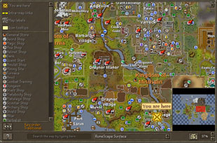
If you prefer to have the world map as a file on your system, you can download a copy of the world map by clicking on the Downloads and Wallpapers link under the "Community" tab at the top of this page.
Once the world map is loaded, you can view any area of the world map by clicking and holding down the left mouse button, and then dragging the mouse. Release the mouse button to stop scrolling once the desired area comes into view. You can also use the arrow keys to move your view of the world map.
There are several options at the bottom of the world map view.
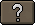 Key |
This is on the far left-hand side, click on it to see a grey list. In this list is an icon for specific locations in the game. Click on any of the entries in the key list and yellow circles will flash in the world map indicating where that building or location can be found. There are also options to turn some map features on or off. |
Search |
Typing the name of a location into this box will allow you to automatically centre the map on the location you specify. You may find that several locations have similar names, though, so continue typing its name until it predicts the location you are looking for. |
Maps |
The map will automatically load with a view of your actual location, even if you are in a dungeon (with a small number of exceptions). To change the map you are interested in viewing, select it from the list available here. Alternatively, any icon with an arrow attached can be clicked to open the map it leads to, like this: |
 Overview |
Click on this to get a minimap showing the entire RuneScape world. You can quickly move your view on the world map by either clicking on a spot in the overview or clicking and moving the red square. The red square in the overview represents the current area you are looking at in larger world view map. Use this overview when looking for locations using the 'Key' list. When you click on an entry in the Key, yellow circles will flash in the world map. But if the location is not in the current area you are examining, you will not see the yellow circles. Using the overview allows you to see the yellow circles even when they are not in your current view. |
 Zoom |
There are five zoom buttons – 37%, 50%, 75%, 100% and 200%. Click on any of these to magnify the world map. It will be necessary to do this when you want to get either a wider view or a more detailed view. If your mouse has a scroll-wheel, this can also be used to zoom in or out. |
Minimap Icons
It is important that whenever you enter a new town or village that you are aware what is available to you there. Looking at the minimap is a good idea of how to familiarise yourself with the buildings in that town, so it is important that you know what each of the icons on the minimap stand for:
Achievement Diary start
Agility shortcut
Agility training
Altar
Amulet shop
Anvil
Apothecary
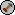
Archery shop
Archery shop
Bank
Brewery
Candle shop
Chainmail shop
Clothes shop
Combat training
Cooking range
Cooking shop
Crafting shop
Dairy churn
Distraction / Diversion
Dungeon
Estate Agent
Farming patch
Farming shop
Fishing shop
Fishing spot
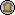
Food shop
Food shop
Fur trader
Furnace
Gem shop
General store
Grand Exchange
Guide
Hairdresser
Hatchet shop
Helmet shop
Herbalist
House portal
Hunter area
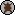
Hunter shop
Hunter shop
Jewellery
Kebab seller
Loom
Mace shop
Magic shop
Makeover Mage
Activity
Mining shop
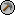
Mining site
Mining site
Platebody shop
Platelegs shop
Plateskirt shop
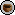
Potters' wheel
Potters' wheel
Pub/Bar
Quest start
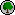
Rare trees
Rare trees
Resting spot
Sandpit
Sawmill
Scimitar
Shield shop
Silk trader
Silver shop
Slayer Master
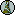
Small Summoning obelisk
Small Summoning obelisk
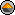
Spice shop
Spice shop
Spinning wheel
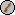
Staff shop
Staff shop
Summoning obelisk
Summoning shop
Sword shop
Tannery
Transportation
Vegetable store
Water source
Windmill

More articles in
Controls
|
|
|
Further Help
If this article does not help you, you may find the following sections of the RuneScape site helpful:
|
|